LD Head Height Adjustment and Center Alignment
!!! IMPORTANT !!!
|
|
WARNING— This procedure DOES NOT apply to Panther Systems repaired with the new Linear Distributor. The new Linear Distributor has a fixed and aligned hook so this procedure IS NOT required at any time on the new Distributor. |
What is Affected
Correct hook height adjustment and centering is vital for several reasons:
- The mounting height of the distributor hook affects auto-teaching of the distributor in the Z‑direction. Incorrect hook Z‑height causes distributor theta and hook step losses at all MTU
 Multi-tube unit—Container used to process tests in the instrument. An MTU contains five separate reaction tubes. The MTU is moved through the instrument by the linear distributor and includes five tiplets for pipettiing to be used in the mag wash station. slot locations.
Multi-tube unit—Container used to process tests in the instrument. An MTU contains five separate reaction tubes. The MTU is moved through the instrument by the linear distributor and includes five tiplets for pipettiing to be used in the mag wash station. slot locations. - The center mounting of the hook affects auto-teaching in the X‑direction.
- Misalignment of the hook causes poor MTU pick‑and‑place quality, linear distributor ‘step loss or stalls’ and ‘lost some steps’ conditions.
Parts and Materials Required
- Proper PPE
- Panther Tool Kit
- Hook Adjustment Kit or Linear Distributor Head Alignment Kit
- HOOK Z ALIGNMENT TOOL—Correctly positions the distributor hook height. The correct Z height positioning is 26.0 mm.
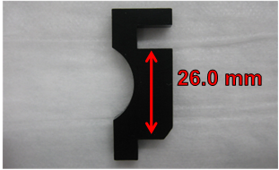
- HOOK X ALIGNMENT TOOL—Acts as a shim that aids in spacing the hook from the inside wall of the distributor head, approximately 5.8 mm.
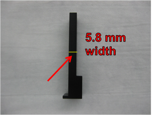
- MODIFIED HEX WRENCH—Modified 2.5 hex wrench is used to loosen/tighten the mounting screws for the hook linear bearing rail. The short end has been cut down so that the tool can reach the screw locations on the linear bearing rail.
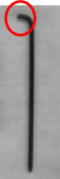
- POSITIONING HOOK USING KIT—Tools will position the hook 26.0 mm relative to the inside top surface of the distributor head and 5.8 mm relative to the inside left and right walls of the distributor head.
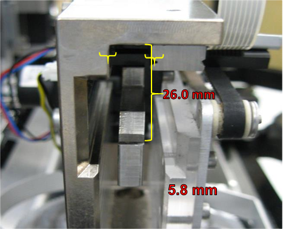
Time Required
60 minutes
Procedure
- Power down the instrument.
- Carefully open the Service Drawer.
- Manually move the Distributor Head to the left side of the system near the Amp Load Station.
- Rotate the Distributor Head so that the hook is visible from the left-side of the instrument.
- Partially extend the hook to gain access to the hook mounting screws.
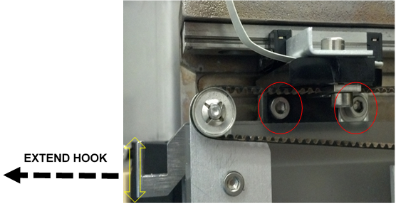
- Loosen (do not remove) the 2 hook mounting screws. (The hook should now move a few millimeters in the Z-direction.)
- Extend the hook by hand and press the hook to the bottom of the tool.
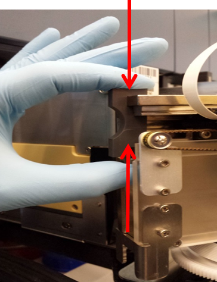
- Push the tool (and hook) into place until end-of-travel is reached.
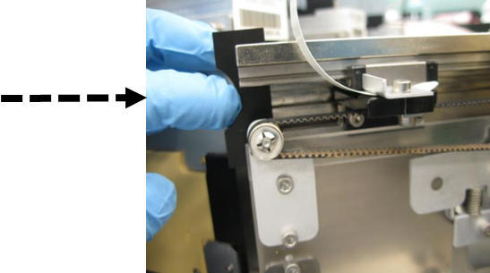
- While pushing up on the bottom of the hook, hold the tool in place and tighten the 2 hook mounting screws.

Note—Ensure that the hook teach cable does not rotate with the rear hook mounting screw while tightening. This rotation causes the teach cable to rub against the incubators when the distributor picks or places an MTU at the Load Stations or MagWashes. Please observe and ensure that this rotation does not occur during the System OQ. 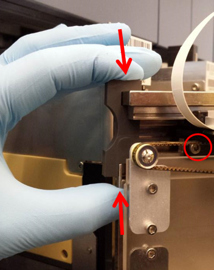
- Loosen each of the 4 distributor hook linear bearing rail screws.
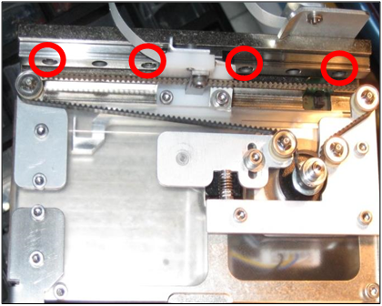
- Ensure that the bearing rail is slightly loose so that there is play in the directions shown by the double arrow.
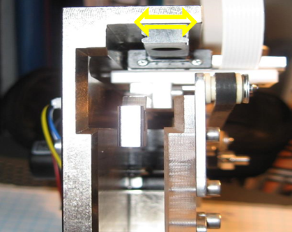
- With the hook fully extended, slip the hook shim tool in between the left-side of the rail and the distributor head wall in the orientation as shown.
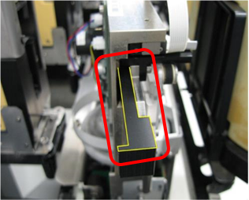
- Press the tool against the end of the hook.
- Push the tool and hook in approximately 2 centimeters to hold the shim in place.
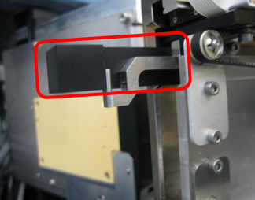
- Insert the tool used for aligning the hook Z height into the other side of the distributor head; it is also used as a shim.
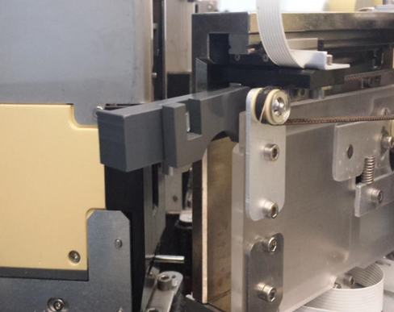
- Push the tools (and hook) until the tab of the left shim is flush with the edge of the distributor head.
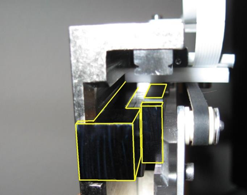
- With the tools installed, re-tighten the 3 exposed linear bearing rail screws in the order shown numbered 1–3.
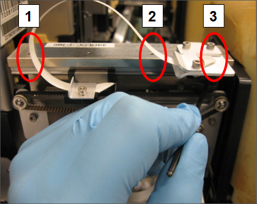
- Move the hook out of the way to tighten the fourth slide bearing rail screw. Remove the tools when complete. The hook and slide bearing rail should not be loose at this point.
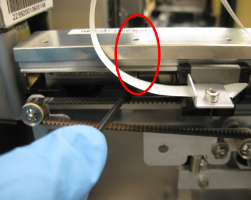
- Apply GP12-257-FSN, Add Loctite and Tighten Distributor Screws, if it has not yet been done.
- Re-align the distributor to the Input Queue. Apply GP12-247-FSN, Input Queue Screw Fastening and Inspection Procedure, if it has not yet been done.
- Ensure that the hook belt is correctly tightened by loosening the auto tensioner screw, allowing the auto-tensioner to apply the correct belt tension and then retighten screw.
- Clean the auto-teach pins at all locations and the distributor hook.
- Auto-teach the Distributor to all locations, paying close attention to the auto teach sequence at each location; ensure that the pin is being touched and the hook sensing is triggering correctly.
Note—If the auto-teach all fails, auto-teach to each individual position and then re-run the auto-teach all function.
Verification
- Run at least 1 System OQ with the service drawer pulled out with all modules selected except the MagWashes:
- Catch the MTU when the distributor tries to place the MTU into the output queue
- Observe all pick-and-place movements.
- Look for any rough MTU placements.
- Investigate and correct any locations where rough MTU pick and place is perceived.
- Close the service drawer, re-install the luminometer injector, and run 2 system OQs at the MagWash modules.
- At the carriers for the MagWash modules, AMP and HPA Hybridization protection assay—The Hologic HPA technique uses a specific DNA probe, labeled with an acridinium ester detector molecule that emits a chemiluminescent signal. load stations, and Sample Mix station, confirm the placement is smooth and the MTU is not bouncing more than normal.
- If the MTU is bouncing excessively, evaluate the MTU carriages using the methods in GP12-244-FSN, Replacement Procedure for Load Station and MagWash MTU Carriers.
- Observe the System OQ’s for any problems that may lead to distributor step loss or stalls. Look for the distributor hook cable, distributor rear or front face hitting the incubators during theta moves. Adjust the hook cable, or incubator slot alignment as needed – if incubator slot alignment is changed, the distributor will need to be retaught to the incubator.
- If any problems are found during the System OQs, address the problem(s) and rerun the System OQs.
- At the Chiller Ramp, confirm the hook is not clipping the bottom of the MTU tab when rotating to grab the MTU. This can cause hook theta lost steps.
Note—If the Hook Height Adjustment is not done correctly, the hook can be positioned too high at the Chiller Ramp. The hook will clip the bottom of the MTU tab when rotating to grab the MTU.
If this happens, repeat Steps 4-8 to re-adjust the hook height (using the Hook Z Alignment Tool) and re-teach the Distributor to all positions.
Recheck the hook at the Chiller Ramp.
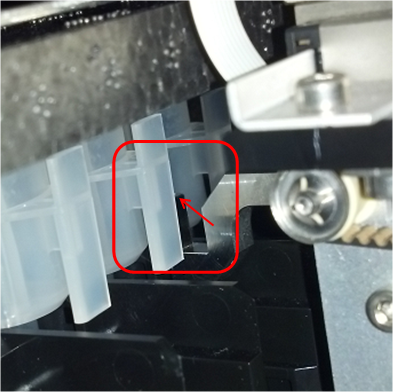
 button at the top of the page to send feedback, comments, or change requests.
button at the top of the page to send feedback, comments, or change requests.